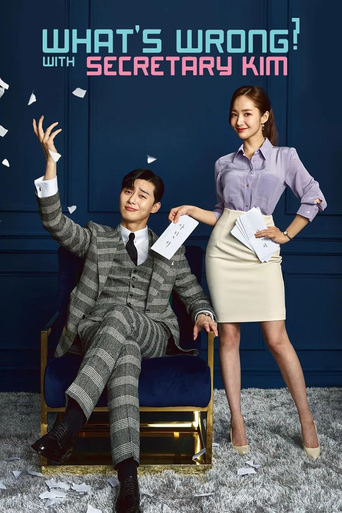
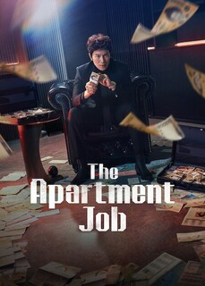
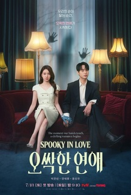
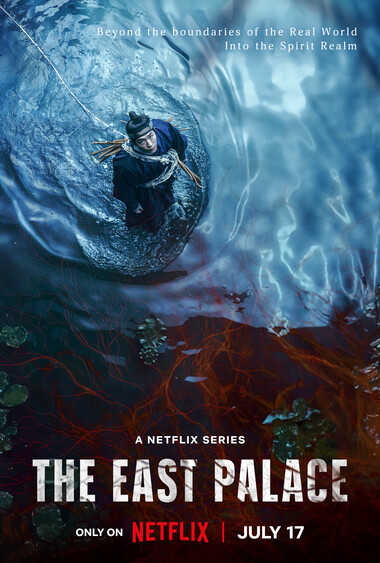

En esta sección de Hallyu-Otaku podrás encontrar información acerca de los K-dramas que salen cada mes.

The Apartment Job habla sobre como el exgánster Park Hae Gang compite por liderar la junta de vecinos de un edificio para robar un fondo de reserva y salvar a su mentor. En su camino se cruzan Kang Ha Ri, una abogada novata; Lee Chung Won, un ambicioso constructor que codicia el mismo dinero; y Jang Sook Jin, la vecina más entrometida del complejo.

Spookie in Love habla de una heredera de hotel que sufre por su capacidad de ver fantasmas y un temeroso fiscal dedicado a investigar casos sin resolver deciden unir fuerzas tras descubrir que forman el equipo perfecto para enfrentar lo oculto. Juntos comienzan a resolver crímenes y a ayudar a los espíritus a encontrar paz, lo que desata una estrecha colaboración que los lleva a enamorarse inesperadamente..

The East Palace trata sobre Gu-cheon, un hombre con la capacidad de cruzar al mundo de los espíritus, y a Saeng-gang, una dama de la corte que puede escuchar a las almas en pena. Ambos se infiltran en los terrenos reales por orden del rey para limpiar un palacio maldito, desenterrar oscuros secretos y salvar al príncipe heredero de presencias siniestras